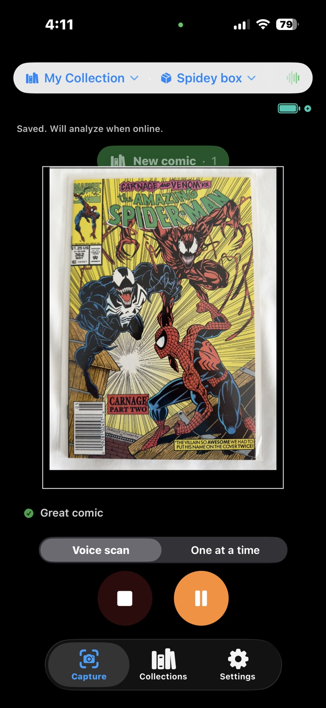
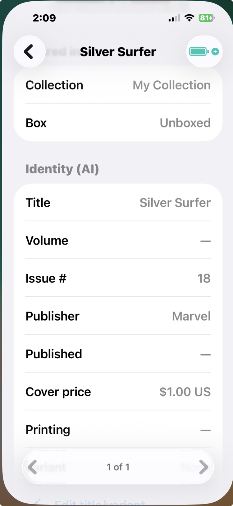
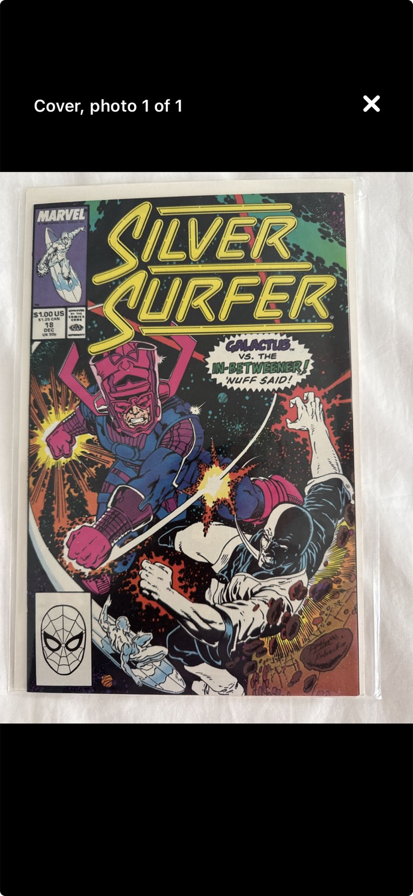

How To
Scanning your first box
Cataloging a box is the first thing you will do with Too Many Comics, and it is built to be the easiest: point the camera, talk, and let the AI do the tedious part. Set the box on a table, open the capture screen, and pick the destination box the books will be recorded into. Then choose how you want to work.

Two capture modes
Voice scan is the bulk mode, and it listens the whole time. Everything you say lands as a comment on the book you are viewing. When you deal the next book under the camera, the app sees the cover change, snaps a new photo, and your commentary starts attaching to that one instead. The rhythm is snap and comment, snap and comment, hands on the books and never on the screen.
One at a time is for when you don't feel like talking, or the setting is too noisy for it. You tap the camera to take each book's photo yourself and keep moving; comments can be added later, in the review.
This mode has two speeds, and they sit on the shutter row as a hare and a tortoise. The tortoise is the deliberate default: after every shot the book opens for review, so you see the photo you just took and fix anything on the spot before the next book. Tap the hare and it becomes rapid fire: shutter only, nothing opens, nothing interrupts. Rapid fire earns its keep on a stack of near-identical copies, where there is nothing new to say ten times and stopping ten times would be the whole cost. Whichever animal you pick stays picked, across sessions, until you tap the other one. Some days you want fast. Some days, slow wins the race.
Either way, one photo per cover is all the AI needs to work out what the book actually is: title, issue, printing. Each book becomes a row that fills itself in as the AI answers, so the list builds while you keep dealing.
Say what the camera can't see

While a book is on screen in a Voice scan, talk to it. A spoken comment attaches to that book and rides along with its photo, and it does two different jobs.
The first is helping the AI get the book right. Anything the cover alone leaves ambiguous, you can settle out loud: “newsstand edition” and “second printing” fill their fields the moment the scan runs, and they are exactly the facts that separate a $25 copy from a $600 one.
The second is recording what only you know. “Signed by the artist”, “water stain on the back cover”, “from Dad's collection”: facts like these attach to the book and stay with it. Your phone transcribes speech on the device; the analysis receives text, never audio. Typed comments work exactly the same way, and in One at a time mode that is the flow: photograph now, comment when you review.
The review

When the box is done, look the results over before you move on. Most rows will be exactly right. For any that aren't, open the book, add a comment (typed or spoken) saying what the AI got wrong, and ask again: a correction builds on the details already recorded instead of starting over. This is also the moment to confirm each book landed in the right box, because the whole point of the inventory is knowing where everything is.

A note on space: every photo is sized on the way to disk, sharp enough to see, search, and zoom, at a small fraction of the original. An entire box barely registers on your phone's storage. And a note on cost: identifying a book spends a credit, so scan the books you care about, not the shortbox of reading copies you already know by heart. The credits guide has the details.
PRO TIP: reviewing box by box isn't the only rhythm. The workflow that scales to a long weekend of scanning: photograph everything first, then run one bulk Instant Ballpark pass, whose smarter second look fixes many identifications by itself. Export an Admin review, fix the stragglers on a big screen with a real keyboard, and import the corrections back. An identity fix clears that book's ballpark on the way in (the old number priced the wrong book), and your next bulk pass re-prices exactly those books and no others: books already priced are skipped, not re-ballparked.
See it in real life: scanning is the first move in most of the scenarios. Watch it settle “do I own this?” in No deal in sight and The back-issue bin, price a stack across the table in The other side of the table, and put a whole garage collection on a dealer's desk in The phone call.